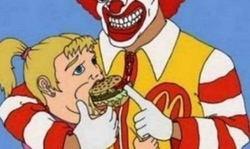

Using red hot peppers makes a big difference. Thanks! I used to be a McD customer untill the bacon muffin didn't only include an egg, but also a chick leg. It was awful. They will never see me again".

Not lovin' it! Mother-of-two left horrified when her daughter, 6, found a human nail in her McDonald's burger
29 June 2015
 Resource: Daily Mail
Resource: Daily Mail
McDonalds Cult leader Ronald McDickhead Charged with foodual harassment
Sources tell us Mr. McDickhead has been putting his 'Burgers' in underaged girls. To be more specific, McDickhead has been force-feeding them his so called 'Big Mac'. His sentence will follow later this week. We personally hope public execution for McDickhead and his 'Big Mac'
Proof McDonals just wants to see you burn in hell
The "McDonald's coffee case", Liebeck v. McDonald's is a well-known product liability lawsuit that became a flash point in the debate in the U.S. over tort reform after a jury awarded $2.9 million to Stella Liebeck, a 79-year-old woman from Albuquerque, New Mexico, who sued McDonald's after she suffered third-degree burns from hot coffee that was spilled on her at one of the company's drive-thrus in 1992. The trial judge reduced the total award to $640,000, and the parties settled for a confidential amount before an appeal was decided. The case entered popular understanding as an example of frivolous litigation; ABC News calls the case "the poster child of excessive lawsuits." Trial-lawyer groups such as the Association of Trial Lawyers of America and other opponents of tort reform sometimes argue that the suit was justified because of the extent of Liebeck's injuries, as the coffee in question was at a temperature too hot for human consumption which McDonald's failed to provide proper warning. Warning consumers of possible dangers of their products is strictly enforced by the FDA. Furthermore, McDonald's should not be serving substances that are potentially harmful to their consumers.